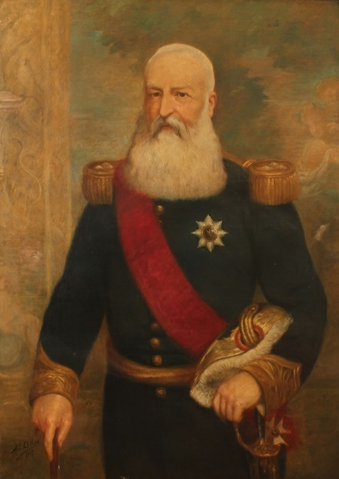
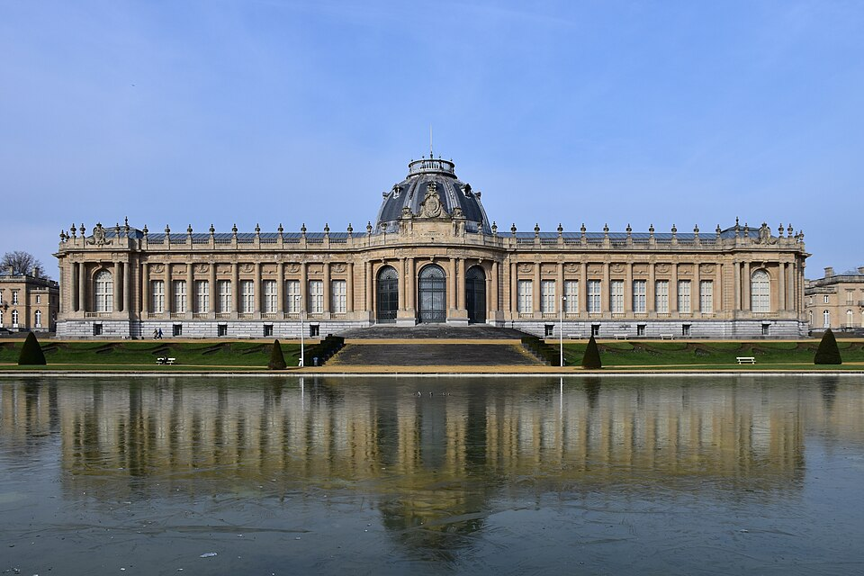

⏱️ 10초 카드 · 제국주의·아프리카 분할 (1835~1909)
콩고 자유국개인 소유 식민지장부의 얼굴을 한 악
여는 질문 — 한 번도 가 보지 않은 땅을, 서류와 숫자만으로 망가뜨릴 수 있을까?
이름
한국어레오폴드 2세
원어Léopold II
실제 발음레오폴드 2세
로마자Leopold II
영어권Leopold II of Belgium
왜 이 사람인가
이 도감에서 레오폴드 2세는 '제국주의의 가장 극단적인 얼굴'이에요. 콩고를 나라의 식민지도 아닌 자기 개인 재산으로 가졌고, 고무 할당량과 공포로 수백만 명을 죽음으로 몰았죠. 그를 폭로한 모렐과 짝지어 읽으면 — 같은 숫자(수출 장부)를 보고 한 사람은 돈을, 한 사람은 범죄를 읽어낸, '본다는 것'의 윤리를 묻게 돼요.
생애
작은 나라 벨기에의 두 번째 왕이에요. 즉위 전부터 '벨기에에는 식민지가 필요하다'며 세계 지도를 뒤졌고, 마침내 아프리카 콩고 분지에 눈을 돌렸어요. '노예무역 근절'과 '과학·자선'을 내건 국제 협회를 만들어 탐험가 스탠리를 고용했죠.
1885년 베를린 회담에서 열강들의 견제 심리를 절묘하게 이용해, 콩고를 벨기에의 식민지도 아닌 <b>자신의 개인 소유지</b>('콩고 자유국')로 인정받아요. 본국의 76배 땅을 한 번도 밟아 보지 않은 채, 고무 할당량과 공포로 운영했어요. 그 수탈로 콩고 인구가 수백만 명 줄었다고 추정됩니다.
윌리엄스·케이스먼트·모렐 등의 폭로로 국제 여론이 끓어오르자, 1908년 벨기에 의회가 콩고를 인수했어요. 그는 죽기 전 콩고 관련 문서를 대량으로 불태웠고, 콩고에서 번 돈으로 지은 화려한 건물들로 벨기에에선 오랫동안 '건설왕'으로 기억됐어요 — 그 기억이 바로잡히기 시작한 건 비교적 최근의 일이에요.
자료로 보기 — 유묵·사진



남긴 말
“이 거대한 아프리카라는 케이크에서, 나도 한 조각을 갖고 싶다.”
콩고를 손에 넣기 전, 식민지를 향한 야심을 드러내며. · 출처: 레오폴드 2세의 말로 전해짐(전언)
“우리의 유일한 목표는 도덕적·물질적 문명화입니다.”
콩고 지배를 '자선·과학'으로 포장한 국제협회의 명분 — 실상과는 정반대였죠. · 출처: 국제아프리카협회 선언(요지)
연표
- 1835출생 (브뤼셀)
- 1865벨기에 국왕 즉위
- 1885콩고 자유국을 개인 소유로 인정받음
- 1890s고무 붐 — 할당량과 공포의 수탈 체제
- 1908국제 여론에 밀려 콩고를 벨기에 정부에 양도
- 1909사망 — 장례 행렬에 야유가 쏟아졌다고 전해져요
생애의 길 — 가 보지 않은 땅을 소유한 왕 🗺️
브뤼셀과 베를린의 서류가, 콩고의 비극이 되기까지. 번호를 차례로 눌러 보세요.
현재 지도 위 표시예요. 위쪽 두 점(브뤼셀·베를린)에서 서류로 결정한 일이, 아래 두 점(콩고)에서 수백만의 비극이 됐어요 — 그는 그곳에 한 번도 가지 않았죠.
빛과 그림자벨기에 안에서는 도시를 화려하게 만든 '건설왕', 콩고에서는 수백만 명의 고통 위에 부를 쌓은 수탈자. 한 번도 가 보지 않은 땅을 서류와 숫자로 망가뜨린 — '장부의 얼굴을 한 악'을 보여 주는 인물이에요. 2020년에야 벨기에 국왕이 콩고에 '깊은 유감'을 표명했어요.
더 깊이 (고등·일반)
식민지를 찾아 헤맨 왕
작은 나라 벨기에의 두 번째 왕이었던 그는, 즉위 전부터 '벨기에에는 식민지가 필요하다'며 세계 지도를 뒤졌어요. 마침내 아프리카 콩고 분지에 눈을 돌렸고, '노예무역 근절'과 '과학·자선'을 내건 국제 협회를 만들어 탐험가 스탠리를 고용했죠. 가장 잔혹한 수탈을, 가장 그럴듯한 인도주의의 간판 뒤에서 준비한 거예요.
참고: 레오폴드 2세와 국제아프리카협회 일반
베를린 회담 1885 — '개인 소유'로 인정받다
1885년 베를린 회담에서 레오폴드는 열강들이 서로를 견제하는 심리를 절묘하게 이용했어요. 그 결과 콩고를 벨기에의 식민지도 아닌, 자신의 '개인 소유지'(콩고 자유국)로 인정받았죠. 본국의 76배에 이르는 땅을 — 한 개인이, 한 번도 그곳을 밟아 보지 않은 채 소유하게 된 거예요.
참고: 베를린 회담(1884~85)·콩고 자유국 일반
고무와 공포 — 할당량 체제
자동차 타이어 등으로 고무 수요가 폭발하자, 콩고는 고무 채취장이 됐어요. 할당량을 채우지 못한 마을에는 손목 절단 같은 잔혹한 처벌이 가해졌죠. 강제 노동과 기아·질병 속에서 콩고의 인구가 수백만 명 줄었다고 추정돼요. '효율'과 '수익'이라는 숫자가 사람의 목숨 위에 놓인 체제였어요.
참고: 콩고 자유국 고무 수탈 일반
폭로 — 윌리엄스·케이스먼트·모렐
선교사 윌리엄스, 영국 영사 케이스먼트, 그리고 선적 장부의 모순을 읽어낸 모렐 같은 사람들이 사진과 통계로 콩고의 실상을 폭로했어요. 국제 여론이 끓어오르자, 1908년 벨기에 의회가 콩고를 정부 식민지로 인수하면서 레오폴드의 개인 지배는 끝났죠. 한 사람의 끈질긴 '읽기'가 거대한 범죄를 멈춘 사례예요.
참고: 콩고개혁협회·케이스먼트 보고서 일반
불태운 문서, 늦은 사과
레오폴드는 죽기 전 콩고 관련 문서를 대량으로 불태웠어요 — '내 콩고는 누구에게도 넘겨줄 게 없다'면서요. 콩고에서 번 돈으로 지은 화려한 건물들 덕에 벨기에에선 오랫동안 '건설왕'으로 기억됐죠. 그 기억이 바로잡히기 시작한 건 비교적 최근의 일이고, 2020년에야 벨기에 국왕이 콩고에 '깊은 유감'을 표명했어요.
참고: 레오폴드 2세의 유산·2020년 유감 표명 일반
사람의 그물 — 함께 읽을 인물
이 인물이 나오는 이야기
더 공부하기 — 여기서 출발하세요
📚 책으로
- 레오폴드 왕의 유령 ↗ · 애덤 호크실드콩고의 비극과 그것을 폭로한 사람들 — 이 주제의 대표작.
📜 1차 사료
- 케이스먼트 보고서 (1904) ↗콩고의 실상을 공식 조사한 문서 — 폭로의 결정타.
🎬 영상으로
- 다큐 〈King Leopold II & the Congo〉 (The People Profiles) ↗🟡 콩고 자유국의 실상을 다룬 장편 전기 다큐 — 무거운 내용이라 어른과 함께 보길 권해요(영어).
📍 가 볼 곳
- 왕립중앙아프리카박물관 (테르뷔런, 벨기에) ↗콩고에서 가져온 것들 — 최근 식민 과거를 다시 묻기 시작한 곳.
- 콩고강 분지레오폴드가 한 번도 밟지 않은 그의 '소유지'.